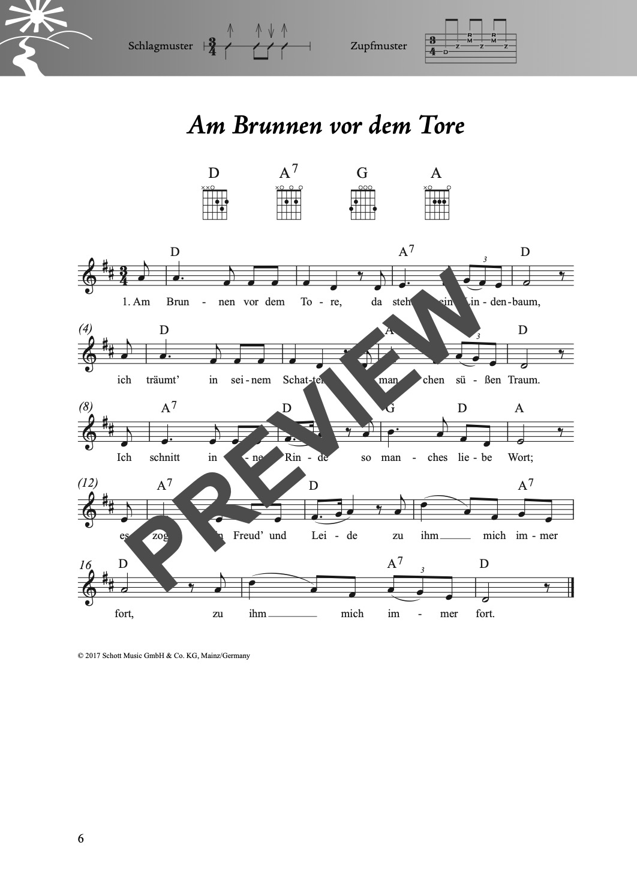
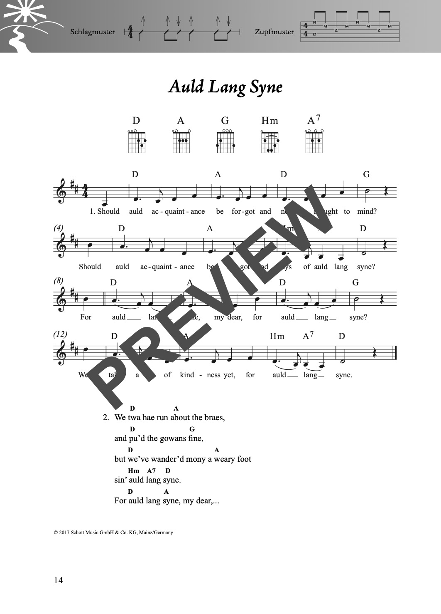
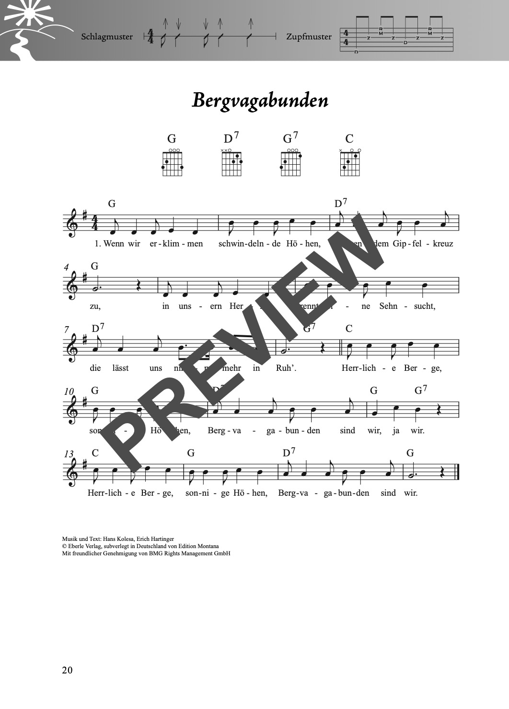
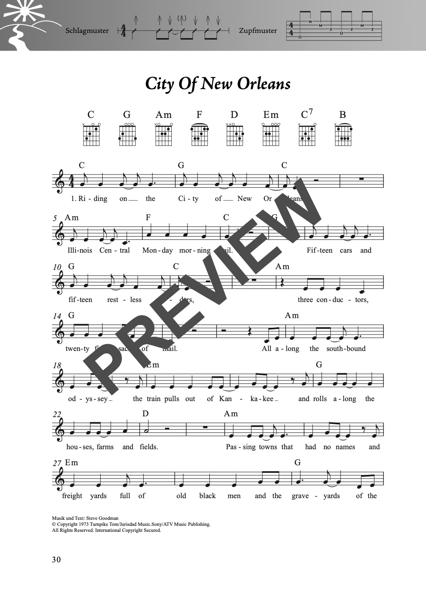
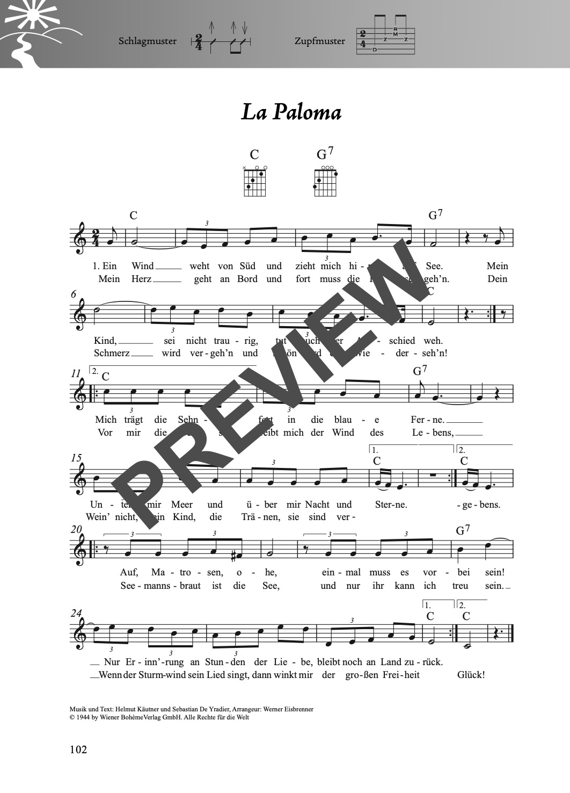
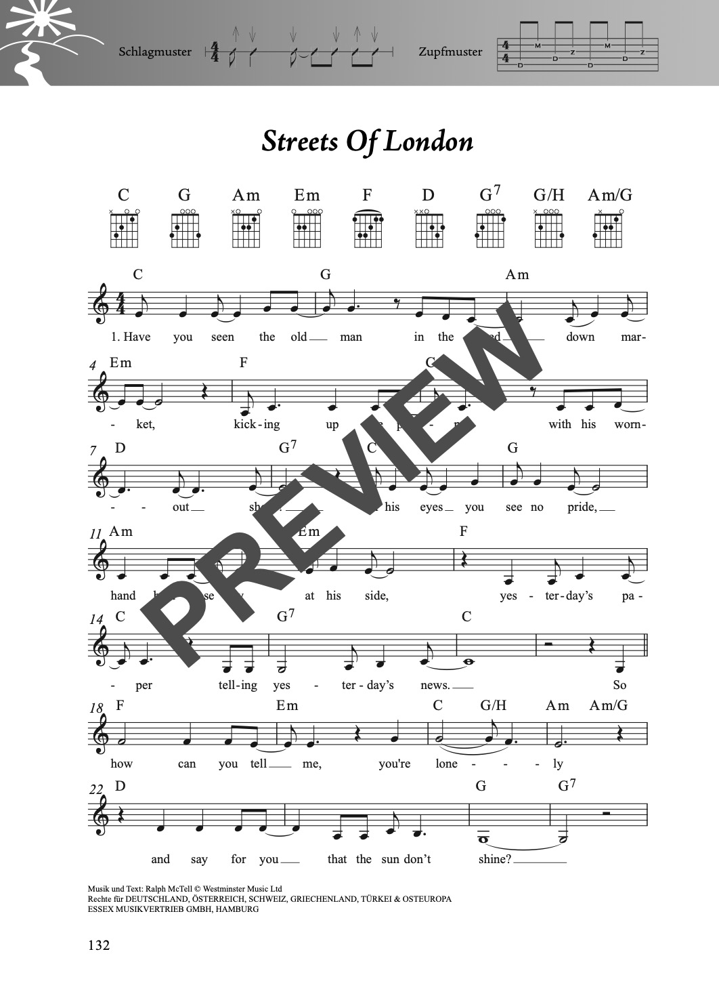
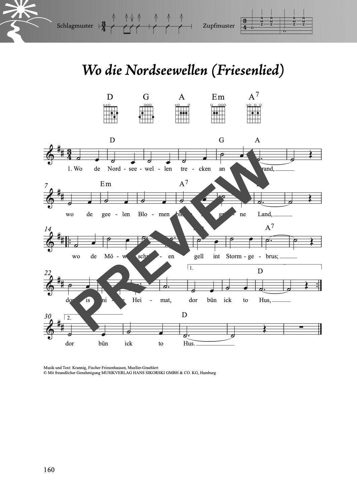
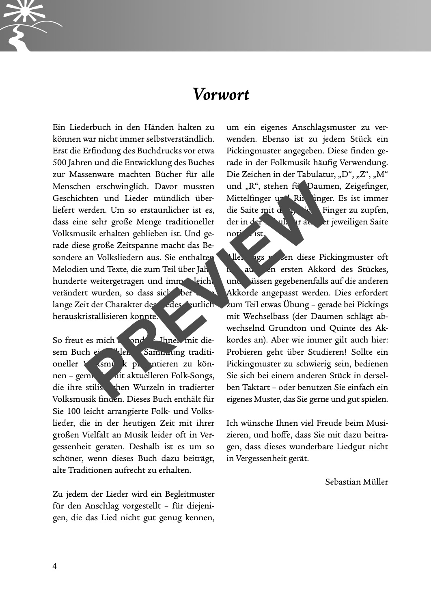

Das Folk- und Volksliederbuch
für Alt und Jung
100 Folksongs und Volkslieder leicht arrangiert für Gesang und Gitarre oder Ukulele. Perfekt für Wanderungen, Lagerfeuer und gemütliche Abende – mit deutschen Klassikern und internationalen Perlen.
für Alt und Jung
100 Folksongs und Volkslieder leicht arrangiert für Gesang und Gitarre oder Ukulele. Perfekt für Wanderungen, Lagerfeuer und gemütliche Abende – mit deutschen Klassikern und internationalen Perlen.
| Ausgabe | Format | Seiten | Bindung | Preis |
|---|---|---|---|---|
| Gitarre | 18 × 25 cm | 164 | Stay-Open-Bindung | 22,00 € |
| Ukulele | 18 × 25 cm | 164 | Stay-Open-Bindung | 22,00 € |
Erhältlich bei Schott Music, Amazon, Stretta Music, Alle Noten, Thomann, Music Store und im gut sortierten Musikfachhandel.
Das Folk- und Volksliederbuch vereint 100 der beliebtesten Folksongs und Volkslieder aus aller Welt in einer Sammlung. Von deutschen Wanderliedern wie „Das Wandern ist des Müllers Lust" über angloamerikanische Klassiker wie „Homeward Bound" bis zu internationalen Highlights wie „El Cóndor Pasa" und „Guantanamera".
Die Arrangements sind einfach gehalten, damit auch Gelegenheitsspieler schnell dabei sind. Ideal für Wanderungen, Picknicks, Lagerfeuer oder gemütliche Abende mit Freunden und Familie.
„Das Wandern ist des Müllers Lust" · „Hoch auf dem gelben Wagen" · „Kein schöner Land" · „Homeward Bound" · „House of the Rising Sun" · „El Cóndor Pasa" · „Guantanamera" · „Blowin' in the Wind" · „Country Roads" · „Scarborough Fair" und viele mehr.
100 Lieder in alphabetischer Reihenfolge:
Einen Eindruck vom Inhalt und der Gestaltung:







